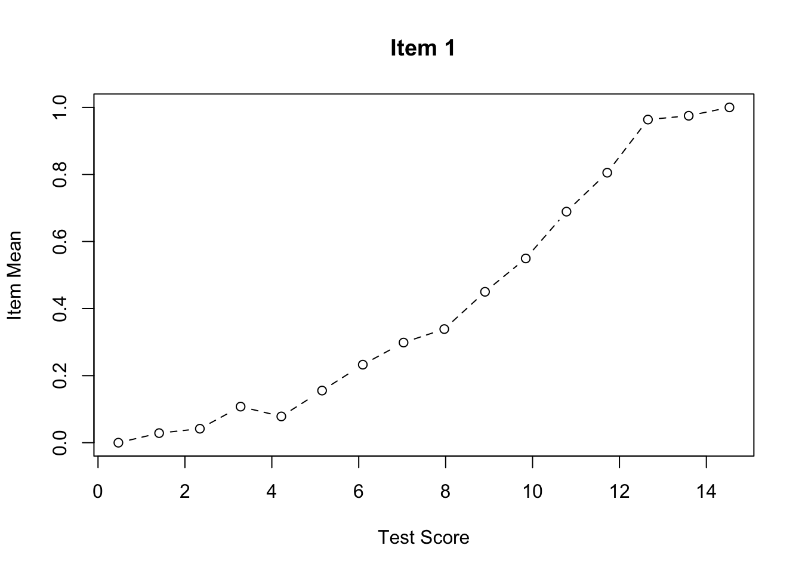
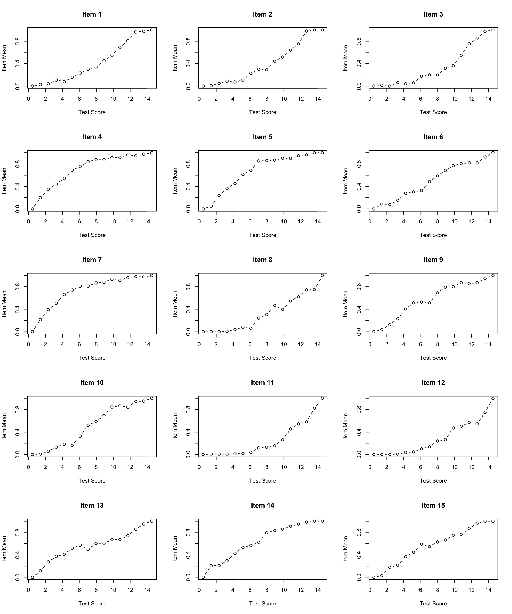
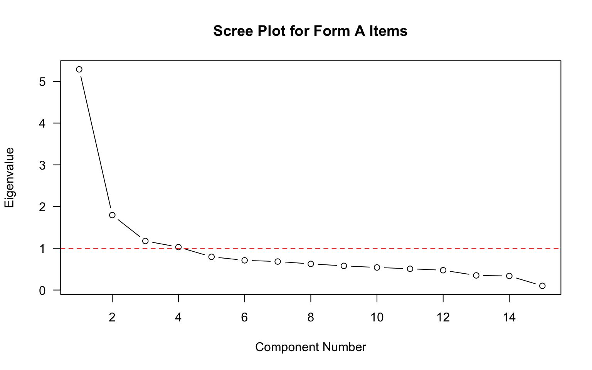

Code
library(CTT)
library(psych)Before fitting an IRT model to test data, it is important to first examine the data using classical item analysis techniques. This activity walks you through the process of conducting classical item analyses to inform decisions about IRT model specification.
A test developer is attempting to create an algebra readiness test that teachers can administer near the beginning of the year to make inferences about students’ preparation for learning algebra.
Each form consists of a series of short algebra problems that are open-ended. Students need to simplify expressions, re-arrange terms, or solve equations. Each response on each form is scored correct (1) or incorrect (0).
Here are two sample items from one of the forms:
Two test forms (“A” and “B”) were administered in a pilot test. Each form actually had 40 items, but we will only focus here on the first 15 from Form A. The sample size is N = 1,958.
First, let’s load the required packages.
library(CTT)
library(psych)# Import data
forma <- read.csv("../Data/pset1_formA.csv")
# Preview the data
head(forma) V1 V2 V3 V4 V5 V6 V7 V8 V9 V10 V11 V12 V13 V14 V15 V16 V17 V18 V19 V20
1 0 0 0 0 1 1 0 0 1 0 0 0 0 0 1 0 0 0 0 0
2 0 0 0 1 1 1 1 1 1 1 0 0 1 0 0 0 0 0 0 0
3 0 0 0 0 0 0 0 0 1 0 0 0 0 0 1 0 0 0 0 0
4 0 0 0 1 1 1 1 0 0 0 0 0 0 1 0 0 0 0 0 0
5 1 1 1 1 1 1 1 1 1 1 1 1 1 1 1 1 0 1 0 0
6 0 0 0 1 1 1 1 0 0 0 0 0 0 0 0 0 0 0 0 0# We will only use first 15 items
forma <- forma[, 1:15]
# Check dimensions
dim(forma)[1] 1958 15Always start with descriptive statistics before doing anything fancy. In this context, descriptive stats are classical item statistics. We’ll use the alpha function from the psych package.
alpha(forma)
Reliability analysis
Call: alpha(x = forma)
raw_alpha std.alpha G6(smc) average_r S/N ase mean sd median_r
0.87 0.87 0.89 0.3 6.5 0.0044 0.38 0.27 0.28
95% confidence boundaries
lower alpha upper
Feldt 0.86 0.87 0.87
Duhachek 0.86 0.87 0.87
Reliability if an item is dropped:
raw_alpha std.alpha G6(smc) average_r S/N alpha se var.r med.r
V1 0.86 0.86 0.87 0.30 6.0 0.0047 0.0083 0.29
V2 0.86 0.86 0.87 0.30 6.0 0.0047 0.0081 0.29
V3 0.86 0.86 0.88 0.30 6.1 0.0047 0.0104 0.29
V4 0.86 0.86 0.88 0.30 6.1 0.0047 0.0126 0.29
V5 0.85 0.86 0.88 0.30 6.0 0.0048 0.0125 0.28
V6 0.86 0.86 0.88 0.30 6.1 0.0047 0.0141 0.28
V7 0.86 0.86 0.88 0.30 6.1 0.0047 0.0137 0.28
V8 0.86 0.86 0.88 0.30 6.1 0.0047 0.0141 0.28
V9 0.86 0.86 0.88 0.30 6.1 0.0048 0.0138 0.28
V10 0.85 0.85 0.88 0.30 5.9 0.0049 0.0134 0.28
V11 0.86 0.86 0.88 0.31 6.2 0.0047 0.0138 0.29
V12 0.86 0.86 0.88 0.31 6.2 0.0047 0.0138 0.29
V13 0.87 0.87 0.89 0.32 6.5 0.0045 0.0126 0.29
V14 0.86 0.86 0.88 0.30 6.1 0.0048 0.0140 0.28
V15 0.86 0.86 0.88 0.31 6.1 0.0047 0.0137 0.29
Item statistics
n raw.r std.r r.cor r.drop mean sd
V1 1958 0.61 0.62 0.64 0.53 0.28 0.45
V2 1958 0.61 0.62 0.63 0.53 0.26 0.44
V3 1958 0.58 0.60 0.58 0.51 0.21 0.41
V4 1958 0.61 0.59 0.57 0.52 0.60 0.49
V5 1958 0.65 0.64 0.62 0.57 0.55 0.50
V6 1958 0.60 0.60 0.55 0.51 0.38 0.49
V7 1958 0.59 0.58 0.54 0.51 0.63 0.48
V8 1958 0.58 0.59 0.54 0.51 0.20 0.40
V9 1958 0.61 0.60 0.56 0.53 0.46 0.50
V10 1958 0.67 0.67 0.64 0.60 0.37 0.48
V11 1958 0.53 0.56 0.51 0.47 0.14 0.34
V12 1958 0.54 0.56 0.51 0.47 0.17 0.38
V13 1958 0.48 0.46 0.40 0.37 0.45 0.50
V14 1958 0.62 0.60 0.56 0.53 0.52 0.50
V15 1958 0.59 0.58 0.53 0.50 0.44 0.50
Non missing response frequency for each item
0 1 miss
V1 0.72 0.28 0
V2 0.74 0.26 0
V3 0.79 0.21 0
V4 0.40 0.60 0
V5 0.45 0.55 0
V6 0.62 0.38 0
V7 0.37 0.63 0
V8 0.80 0.20 0
V9 0.54 0.46 0
V10 0.63 0.37 0
V11 0.86 0.14 0
V12 0.83 0.17 0
V13 0.55 0.45 0
V14 0.48 0.52 0
V15 0.56 0.44 0What is Cronbach’s alpha for this 15-item test? What does this suggest about the internal consistency reliability?
Look at the item statistics. Which items have the highest and lowest item-total correlations (r.drop)? What might this indicate?
Are there any items that, if dropped, would substantially improve alpha (raw_alpha column)?
We can use the function cttICC from the CTT package to create empirical ICC plots based on observed total scores. These plots show the relationship between total score and the probability of getting each item correct.
Let’s start by looking at a single item:
cttICC(scores = apply(forma, 1, sum),
itemVector = forma[, 1],
plotTitle = "Item 1")
Now let’s create ICC plots for all 15 items:
par(mfrow = c(5, 3)) # Sets graphics parameter to show plots in a 5x3 grid
for (i in 0:4) { # Outer loop to run this 5 times
for (j in 1:3) { # Inner loop to produce plots in sets of 3
cttICC(scores = apply(forma, 1, sum),
itemVector = forma[, paste0("V", 3*i + j)],
plotTitle = paste0("Item ", 3*i + j))
}
}
par(mfrow = c(1, 1)) # Reset graphics parameterWhat do you notice about the shape of the empirical ICCs?
Are there any items that look problematic (e.g., non-monotonic, very flat, etc.)?
Do the items appear to have similar discrimination (slopes), or do some items discriminate better than others?
Before fitting an IRT model, we should check whether the assumption of unidimensionality is reasonable. One simple approach is to examine the eigenvalues of the correlation matrix.
# Calculate and plot eigenvalues
eigenvalues <- eigen(cor(forma))$values
plot(eigenvalues,
type = "b",
las = 1,
xlab = "Component Number",
ylab = "Eigenvalue",
main = "Scree Plot for Form A Items")
abline(h = 1, lty = 2, col = "red")
What does the scree plot suggest about the dimensionality of these data?
How many eigenvalues are greater than 1? What might this indicate?
Is there evidence of a dominant first factor?
Based on your analyses above:
Do you think an IRT model will fit these data? If so, which one (1PL, 2PL, or 3PL) and why? If not, why not?
Consider:
This activity is Part 1 of the IRT modeling sequence. In the next activity, we will fit IRT models to these data.